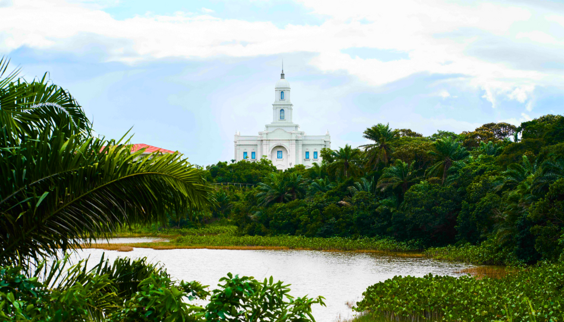

Salvador, Brasil

Sobre o Templo
O Templo de Salvador, Brasil é um verdadeiro refúgio de paz e um marco espiritual para todos os membros da região e de estados vizinhos. Sua presença traz um sentimento profundo de esperança, união e consolo para as famílias baianas.
É um lugar sagrado onde podemos nos achegar mais ao Pai Celestial e renovar nossos propósitos de seguir o Salvador Jesus Cristo com amor e dedicação.
Informações para Visitação
- Localização: Salvador, Bahia, Brasil
- Horários: Terça a sexta 18:30H ás 21:30H e sábado das 8H às 17H
- Telefone: (71)3616-9280
- Acomodações: Disponíveis na região para visitantes membros da Igreja